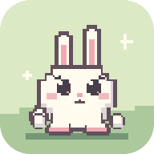

MATKA0 m
TÖKI!
NIITTY
Uusi versio on valmis.
Selain ei salli tallennusta. Ennätys ja asetukset säilyvät vain tämän käynnin ajan.

PONPPUSelain ei salli tallennusta. Ennätys ja asetukset säilyvät vain tämän käynnin ajan.